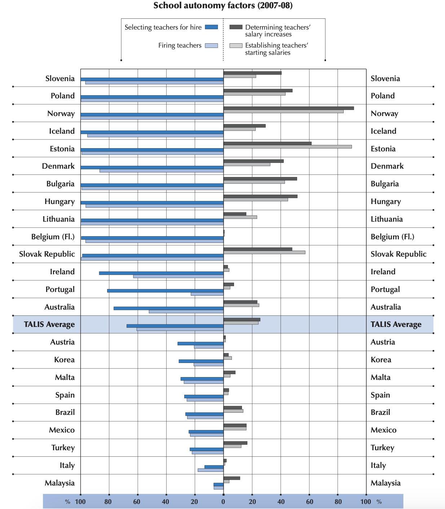
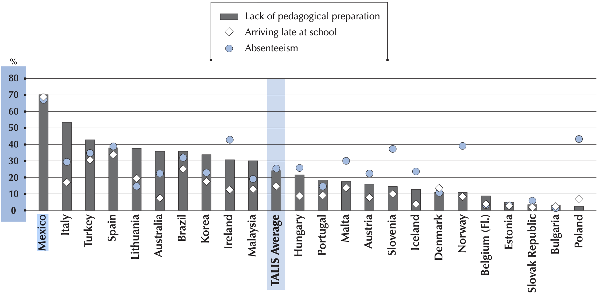

The Mexican Education System
History of Primary and Secondary School Dynamics
When my mom entered the first grade in Guadalajara, Mexico, her teacher taught her absolutely nothing. The only thing the teacher did was smoke, read magazines, and gossip with teachers who happened to pass by in the halls. To keep students busy, she would tell them to write letters or numbers repeatedly on a page. She never taught from a book or gave a lecture. When the school year ended, my grandmother thought my mom would have to repeat the year because my mom didn’t know how to read. My grandmother spoke with the second-grade teacher to ask about my mom repeating the first year given she had not learned anything. The teacher reassured her that all the students were in the same place. The second-grade teacher said she would teach first grade the first semester and second grade the second. My mom remembers that she was an excellent teacher who taught them to start reading in about three months. The second-grade teacher taught a group of fifty students two years’ worth of content in one year. This is what led me to investigate the systemic educational disparities in the Mexican education system, specifically in public primary and secondary schools.
Outcomes and Statistics
According to the OECD’s (Organization for Economic Co-operation and Development) figures, compared to member countries’ academic student performance through the results of the OECD-administered PISA (Programme for International Student Assessment) test, Mexico ranks poorly in most educational outcomes and statistics compared to other member states. Among all the OECD countries, Mexico consistently ranks as one of the lowest-performing countries, such that it is easier to list these statistical comparisons by how far away Mexico is from last place. In the 2018 OECD report, it ranks fourth to last among forty countries in reading (2021e), fifth to last in mathematics, (2021d) and fifth to last in science, 2021f).
In spending, a similar story is also provided by the OECD’s report. Mexico ranks third to last in spending per student and seventh to last in percent of GDP spent on public education (OECD, 2021c). While on the other hand, it is the sixth-highest spender in percent GDP spent on private education (OECD, 2021b). This indicates there is rampant inequality in education, as the public schools where poorer individuals attend are one of the worst-funded in the developed world, while private schools where more affluent students attend are the best-funded in the world. However, spending does not always equate to quality of education. This can be seen with Costa Rica, which spends more than double per student ($15,876 to Mexico’s $7,341) (OECD, 2021a). It places behind Mexico in mathematics and science, and only one place ahead in reading (OECD, 2021d&e). Although the amount spent is important, how it is spent is more influential in the quality of education.
With a questionable education system and difficult job market, the so-called ninis (those who neither are in school or working) are high in quantity in Mexico. The 2021 OECD report shows Mexico above average in percent of ninis, with fifteen to nineteen year old men being at 10% and women of the same age being at around 19% (OECD, 2021h). All of these indicators have pointed to an education system that is failing the Mexican people.
SNTE
This section will focus on how teacher unions, namely the SNTE (Sindicato Nacional de Trabajadores de la Educación) with 1,673,623 members (Redacción UNIÓN, 2018), function in the Mexican education system. I will draw from an analysis by a professor of education at the Universidad Nacional Autónoma de México, Carlos Ornelas, on the corporatist structures of the SNTE, as well as a brief history. Then, I will delineate how the SNTE controls the vital apparatuses of education in practice and examine other powers of the SNTE from my interview with Professor Norma Vélez, the upper secondary school principal at the Universidad Cuauhtémoc Guadalajara.
Britannica defines corporatism as the “theory and practice of organizing the whole of society into corporate entities subordinate to the state” (Corporatism, 2014). Practiced in fascist authoritarian regimes like the infamous Nazi Germany and Mussolini’s Italy, a corporatist regime creates institutions or organizations that categorize people under the power of an organ. The corporatist ideology in Latin America harkens back to the colonialist era which also practiced a similar dynamic of the mother country creating puppet institutions overseas. These corporatist structures are given a monopolistic authority over the representation of those under the organs’ jurisdiction. The organs are subordinate to the regime and act for it by following its orders and suppressing the dissenting opinions of its constituents. In return, the state can grant certain privileges to the constituents of the corporatist organ in exchange for more privileges to the oligarchical council that leads the organ and minimal supervision of the organ operations. The corporatist ideology is the foundation from which the SNTE was structured and contextualizes all of its interactions.
SNTE History
By understanding the corporatist ideology that created the SNTE, the SNTE’s history can be seen to be a complicated evolution of an interplay between the regime and a power-hungry organ. During the presidency of Lázaro Cárdenas in the late 1930s, corporatist structures began to be erected out of unions. President Cárdenas consolidated many problematic and important unions like farmers, industrial workers, and other sectors into a national union with oligarchical leaders appointed by the one-party state. Approximately 700 different teachers were able to fend off pressure to consolidate until 1944, when President Ávila Camacho signed an executive order to force the unions to become the SNTE (Ornelas, 2008, p. 450). Public school teachers were obliged to be part of the union which bestowed upon the leaders of the SNTE a monopoly on the representation of educators, as they were the only legitimate interlocutor with the state on education.
Until the 1970s, there was a lack of oversight of SNTE operations, which catalyzed the process of what Ornelas describes as the SNTE colonization of the SEP (Secretaría de Educación Pública), the Mexican department of education. SEP was a federally centralized organization and the leaders who partnered with the SNTE had the support of the major monopoly of education advocacy which allowed these leaders to be successful in the SEP. Before long, the SEP and SNTE had become close partners in its leadership which expanded the SNTE’s influence further (Ornelas, 2008, Colonización y contienda).
The presidencies of Echeverria, Lopez Portillo, and Miguel de Madrid in the 1970s and early 1980s seemed to weaken the increasingly autonomous SNTE’s influence on the SEP. A decentralized SEP would be more difficult to control than a highly centralized SEP with a small congregation of people; this was an outrage for the SNTE (Ornelas, 2008, pp. 454-5).
The presidency of Salinas de Gortari brought many changes to the regime and SNTE relations. In 1989, he kicked out the SNTE leader Carlos Jonguitud Barrios, a PRI member who was accused of corruption in his fifteen years as SNTE leader, to realign the SNTE with the regime (Ornelas, 2008, p. 455). He replaced him with another PRI member, the now infamous Elba Esther Gordillo (first in Forbes 10 Most Corrupt Mexican of 2013). Gordillo would be in power for twenty-four years and would oversee numerous changes to the way the SNTE would work with the regime. In 1992, Gordillo conceded to the Acuerdo par la modernization de Educación Básica, which would apply federalism to the SNTE organization in exchange for benefits for teachers and more political authority in the system. Morelos also explained that it had implicit agreements as well, the continuation of colonization of the SEP with the firing of the SEP leader Barlett Díaz who impeded the SNTE’s colonization efforts (Ornelas, 2008, p. 456).
Until the PAN President, Vicente Fox, in 2000, the PRI had been the dominant figure in the federal government and exclusively in the executive. It was a complicated question whether the SNTE, as a corporatist structure, would continue to function by allying with different political parties. The answer was yes. According to Ornelas, the SNTE was a convenient tool for the PAN to use as newcomers to controlling the executive branch. Vicente Fox and Felipe Calderon were close allies with Gordillo as they lacked oversight of the SNTE and in exchange, Gordillo helped them with support for his legitimacy and policies that would look good for the public like the 2002 Compromiso Social por la Calidad de la Educación which declared that each educational actor should do their part (Ornelas, 2008, La Verdadera Nueva Alianza). This period secured the SNTE as not necessarily a PRI organ but an organ that can be used by any political leader who wishes to play the game, allowing the SNTE to operate in exchange for their political help.
Although the PRI had created the SNTE as a corporatist organ for its regime after the PAN years, the SNTE has grown in sufficient autonomy that it can switch parties to ally with or across parties. With the return to PRI presidents in 2012, President Peña tried to undercut many of the freedom and lack of oversight of the SNTE with teacher exams for incompetent teachers but failed to pass the reforms after the teacher union protest (Usi, 2019). With the 2018 election of the MORENA president Lopez Obrador there was again a return to the pleasing of the SNTE with the abolition of the INEE (Instituto Nacional para la Evaluación de la Educación that independently evaluated school performances) and also did not create teacher exams that could identify the worst teachers.
SNTE Power Dynamics
After this brief history that contextualizes the SNTE, we can now examine how it has influenced policy-making in Mexico. In Congress, the committee on education CDE (Comisión de Educación), in both the chamber of deputies and the senate, is in charge of educational policy by acting as the “gatekeepers’’ to passing initiatives (Santibáñez, 2008, p. 427). Therefore this committee has the power to push forward or stall different educational initiatives, which means control of it is influential for the rest of the educational apparatuses. In three out of four legislative terms from 1997 to 2009, 50% of the CDE mesa directiva (committee leaders) in the chamber of deputies had an affiliation with the SNTE (Figure 1). There is a notable influence on the CDE from the SNTE that leads to further expansion of the SNTE power of the educational apparatuses. The budget committee also influences the education budget, which is why SNTE has seen it as imperative to control it. From 2006 to 2009, the Senate CDE was led by SNTE leader, Gordillo’s daughter, Mónica Tzasna Arriola Gordillo, as one of the directors of the committee. As a consequence of their immense power, real teacher salaries in Mexico increased between 34-40% in Mexico between 1996 and 2004, which is the second highest teacher salary increase among OECD members behind Hungary (Santibáñez, 2008, 421). These wage gains return to the SNTE with union dues that prop up the union financially. This has allowed the SNTE to pocket some of the money, as was shown by the corruption charges filed against Gordillo that accused her of embezzling $200 million dollars (Estevez, 2014).
Figure 1
CDE (Comisión de Educación) Members Who Are Associated With the SNTE
| Chamber | Legislature | |||
|---|---|---|---|---|
| LVII (%) 1997-2000 |
LVIII (%) 2000-2003 |
LVIX (%) 2003-2006 |
LVX (%) 2006-2009 |
|
| Chamber of Deputies | ||||
| Mesa directiva (directors of CDE) affiliated with SNTE | 2 (50) | 4 (80) | 3 (43) | 7 (58) |
| All CDE members affiliated with SNTE (including mesa directiva) | 10 (38) | 8 (36) | 6 (26) | 12 (40) |
| Senate | ||||
| Mesa directiva (directors of CDE) affiliated with SNTE | 2 (50) | 0 (0) | 1 (33) | 1 (33) |
| All CDE members affiliated with SNTE (including mesa directiva) | 3 (23) | 2 (17) | 1 (8) | 2 (28) |
Note. Adapted translated version of Lucrecia Santibáñez Figure 1 in her 2008 investigation Reforma Educativa: El Papel del SNTE (Santibáñez, 2008, p. 428). The following is a translation of Santibáñez notes: A person is considered a member of the SNTE when: their profile indicates they are an active member of the SNTE, when they hold or have held an administrative position in the CEN of the SNTE or in the sectional committees. In the event the CVs are not detailed, it is assumed the person is active in the SNTE, when they have served as a supervisor or director of basic education schools, have held an administrative position (e.g. director or academic secretary) of a normal school or the UPN or when its only reference is that it lists basic education teacher as an occupation. Source: Own elaboration based on the curricula vitae of deputies, provided by the Education Commission of the Chamber of Deputies and information contained in who is who in Congress (Mexico, 1999). For the LIX Legislature, information was used from www.monitorlegislativo.org.
The SNTE has an explicit goal to lobby for teacher benefits, and its implicit goal is to prop its oligarchs and friends up with a vast hold of educational apparatuses. They carry out their goal by creating close alliances and revolving doors between themselves, educational policymakers, and SEP leaders, according to my interview with Professor Velez (N. Velez, personal communication, November 30, 2022). They have vast control over the educational system with no intention to support the educational opposite. Even a 2006 poll showed 41% of basic (elementary) school teachers say the SNTE helps teachers but does little to advance educational quality. However, I argue that because the SNTE has both massive control over educational apparatuses and no obligation to educational quality, the SNTE is at best a roadblock to educational quality and at worst actively working against it to avoid needing to worry about educational quality. Strikes have become a political tool for SNTE goals as well, which have come at the expense of educational quality. Santibañez discusses the SNTE Section 22 strike in Oaxaca in 2006 which exemplifies the strikes as a political weapon (2008, p. 423). Teachers went on strike for better wages, but even after this plea was granted, the strike continued as a means for initiating the resignation of the governor of Oaxaca. The strike lasted for more than five months and meant students lost almost an entire semester. SNTE has immense power in the educational system, which they are willing to use for political gain at the expense of educational quality. In my research, there were holes regarding specific SNTE operations, so to understand more explicit and implicit powers of the SNTE, I interviewed Professor Norma Vélez, the upper secondary school principal at the Universidad Cuauhtémoc Guadalajara, who has twenty years of experience in education, including sixteen years as a principal. To become a public school teacher, candidates must join the union first. The SNTE administers the examen de oposición (qualification test) to the candidates and then selects teachers. Professor Velez explains it is an open secret that prospective teachers with friends in the SNTE or with a bribe, can pass the test, as the SNTE has no real incentive to quality education (N. Velez, personal communication, November 30, 2022). A form where this dynamic has worked is in the French department of education, which operates under a similarly centralized system that hires teachers at a national level and then “appoints” them to particular schools. It would be understandable for the department of education to have control of these appointments because a department of education, like in the France example, has an obligation to better education (Cornu, 2015, p. 290).The SNTE does not have oversight or an incentive to promote quality education, which is why it is unreasonable for the SNTE to have the power to create and administer a qualification test and send teachers to schools. Desirable teacher appointments–those close to home or in urban areas–are those most likely to be given to teachers with friends in the SNTE or with a bribe while undesirable teacher appoints–those in rural–poor, or dangerous areas are many times given to good teachers without these friends who go to these schools only to be burned out. Schools then feel that they do not have control of who their teachers are as seen in Figure 2.
Figure 2
Schools that Reported Considerable Autonomy Over Different factors of Teacher Selection (2007-2008)  Note. This figure was taken from Figure 2.4 in the 2007-2008 OECD TALIS database (OECD, 2009, p. 37). They noted: “Countries are ranked in descending order of the percentage of teachers whose principal reported considerable responsibility held at the school for selecting teachers for hire” (OECD, 2009, p. 37).
Professor Velez also explains that the contracts teachers have once they are appointed to a school are also administered by the SNTE. They are the ones that renew the plazas (contracts), which have also been scrutinized for corruption. A 2002 pool of elementary and middle school teachers even said that a third of teachers think that the venta de plazas (bribes to get contracts) is a frequent practice (Santibañez, 2008, p. 422). The lack of non-SNTE filters for candidates to become teachers and the lack of consequences for incompetent or corrupt teachers means that the credentials and abilities of teachers can not be trusted. This lack of credentials and competence manifests in Figure 3 which shows that Mexico ranks high in principles considering their teachers’ behavior hinders education quality. This lack of trust can explain why Mexico ranks very low in teachers having responsibility for school policies and curriculum (Figure 4). School leaders do not trust teachers with choosing what can be taught and other important policies which can limit and burn out passionate teachers who are competent. Another corrupt practice with teacher contracts is the licenses that the SNTE can advocate for on behalf of the teacher. These licenses are paid leaves of absence that can be manipulated to help certain teachers neglect their school responsibilities. This is why Professor Velez has anecdotally heard of teachers with friends in the SNTE getting away with teaching only a few times a year (N. Velez, personal communication, November 30, 2022).
Figure 3
Percentage of Teachers Whose Schools Principals Reported That the Following Teacher Behaviors Hindered the Provision of Instruction in Their School a Lot or to Some Extent (2007-2008)  Note. This figure was taken from Figure 2.5 in the 2007-2008 OECD TALIS database (OECD, 2009, p. 39). The following is their note on the figure: “Countries are ranked in descending order of the percentage of teachers whose school principal reported a lack of pedagogical preparation as a factor hindering instruction” (OECD, 2009, p. 39). This high-ranking Mexico has shown that the lack of oversight of the SNTE from authorities with in interest in educational quality is translating to more incompetent teachers who lower educational quality.
Figure 4
Overall Teachers’ Responsibilities for School Policies, Curriculum and Instruction  Note. This figure was taken from Figure 15 in the 2018 OECD TALIS (Teaching and Learning International Survey) database (OECD, 2019). The following is their note on the figure: “1.This percentage is calculated based on whether principals report that teachers have significant responsibility in at least 4 of the following 6 tasks:”establishing student disciplinary policies and procedures”; “approving students for admission to the school”; “establishing student assessment policies”; “choosing which learning materials are used”; “deciding which courses are offered” and “determining course content”. Countries and economies are ranked in descending order of the percentage of lower secondary principals who report that teachers have significant responsibility in a majority of tasks related to school policies, curriculum, and instruction”(OECD, 2019).
Note. This figure was taken from Figure 15 in the 2018 OECD TALIS (Teaching and Learning International Survey) database (OECD, 2019). The following is their note on the figure: “1.This percentage is calculated based on whether principals report that teachers have significant responsibility in at least 4 of the following 6 tasks:”establishing student disciplinary policies and procedures”; “approving students for admission to the school”; “establishing student assessment policies”; “choosing which learning materials are used”; “deciding which courses are offered” and “determining course content”. Countries and economies are ranked in descending order of the percentage of lower secondary principals who report that teachers have significant responsibility in a majority of tasks related to school policies, curriculum, and instruction”(OECD, 2019).
The SNTE was founded to have a corporatist relationship with the state and this relationship has continued out of conveniences, incentives, and optics, although the relationship has become more complicated over time. The SNTE was made to have a monopoly on the representation of educators and lack of oversight in exchange for its support to political friends. This lack of oversight, however, has led the SNTE to expand its reach to guarantee its power at the expense of educational quality.
SEP
While the SNTE is a corporatist organ with a monopoly of power over teachers, the SEP has worked as a puppet department with authority over the “curriculum, pedagogy, and eventually evaluation” of the education system while also being controlled by other actors for their political gain (Scott et al., 2018, p. 44). The SEP has a lack of authority over the education system as many of those controls have been given to the SNTE, while the powers it does possess have been historically influenced and used by the executive for political gain.
SEP Structures
To understand how the corruption of the SEP is undoubtedly negatively affecting the quality of education in Mexico, I will start by examining its structure. Created in 1921, the SEP was created to also be a corporatist organ that has largely continued to be under the thumb of the executive, unlike the SNTE which has increased in autonomy and leverage over time. The SEP has been described to have four types of employees: regular employees, empleados de base, empleados de confianza, and those with plaza de contrato (Scott et al., 2018, p.47). Regular employees are the smallest category and normal straightforward legal employment and perform smaller not as important tasks. Empleados de base (base employees) are underwritten by the SNTE and cannot be moved from their positions to the point that if they retire family members, their position will be inherited or sold. With every change of the minister (head) of the SEP new empleados de confianza (employees of confidence) are brought in and the minister can replace them if they fail to conform or with the changing of the minister by the president. Those with plazas de contrato (contracts), “in areas like graphic design and computer science, who alone among the employees were sometimes chosen for their expertise and not their political loyalty” (Scott et al., 2018, p.47). In this system all those with the power to make a change need to answer to a superior or their “sponsor” into the system meaning that, “loyalty to group was paramount and more important than trying to find solutions to educational problems” (Scott et al., 2018, p.48). These roles show that the SEP corporatist and loyalty employment structures create a system with incentives to please superiors or a “sponsor,” not to do what is right for the education system.
SEP Power Dynamics
After seeing the structures in the SEP that enable corruption, the examples of SEP corruption in practice affecting educational quality can now be visited. One recurring fact is that the president of Mexico has historically, and continually, used the SEP as an easy way to disperse propaganda throughout the nation. The program Libros de Texto Gratuitos (free textbooks) for example, is mandatory and was part of the 1992 Salinas and Zedillo textbook scandal (Gilbert, 1997, p.271). It was an attempt for President Salinas–who helped Gordillo into the SNTE–and Minister of SEP Ernesto Zedillo (future president) to create new textbooks that would sanitize Mexican history (Gilbert, 1997, Zapata and the Revolution). NAFTA was a hallmark of President Salinas de Gortari’s administration, and he would use more than one channel to tell the Mexican people that it was a good idea. The 1992 texts pushed forward by President Salinas and the SEP were criticized for, “rewriting national history with the intention of pandering to U.S. opinion and undermining traditional Mexican nationalism” (Gilbert, 1997, p.284). The focus of the political figures that operate the SEP is not quality education, but seeing how their powers can help them win politically. The priorities of those who run the SEP are not promoting quality education and this corruption undoubtedly undermines it.
The Mexican education system has historically had the intention to promote assimilation and nationalism for rural, indigenous, and poorer people who were more prone to anti-government radicalism (Corona, 2008). The 1946 reform to Article III of the Mexican constitution, which guarantees education for Mexicans, states that the schools should foment in students “amor a patria”(love for country) (Diario Oficial, 1946). In other words, the school should be a place for the diffusion of pro-government propaganda which led to the SEP free textbooks program. The program has a complex history, especially for the various indigenous languages. Corona examined the different government initiatives and programs for the education of indigenous people over time and concluded that there is no variation contained in such governmental proposals, and it is clear that there is no interest in strengthening or learning about the indigenous culture itself” (2008, Abstract). It shows that the objective of assimilation trumps creating educational initiatives of quality through respect for indigenous culture.
Another example of political figures exerting their power through the SEP is using the SEP to win votes or smear opponents. Professor Velez recounts that she attended a mandatory SEP professional development event for principals of schools. However, this training session was really a way for the SEP to tell the principals that they should vote against President AMLO (Andrés Manuel López Obrador) in the recall referendum and that they should also let their teachers and students know that they should do the same. She explains that the governor of Jalisco is politically against the president’s party, so he used the SEP to create training sessions as an excuse to spread his propaganda. Instead of the SEP helping principals with training on how to be better leaders for their schools, which could better the quality of education, the SEP does what it is meant to do, which is be used by their political superiors. This SEP is manipulated at the state level by the state government but also at the federal level. Professor Velez explains that with every change in the presidential administration, there is an overhaul of teaching materials as each government wants to emphasize that their administration will do what the previous could not. She explains that the illusion of improvement of educational quality is valued over actual improvement, which would be a stable pedagogical method that teachers and students could get used to (N. Velez, personal communication, November 30, 2022).
The methods of evaluation have also been highly politicized as they are the windows into understanding the deficiencies of the system and the regime has a vested interest in making their administration look good. In 2021 Mexico suspended its participation in the PISA test (in this research paper the PISA test was the basis for identifying that a deficiency did exist but this test will not be able to provide this context in the future). It comes in a pattern of suspensions in the AMLO presidency with the pulling out of UNESCO’s ERCE test in and the abolition of the INEE (Instituto Nacional para la Evaluación Educativa), an autonomous government organ that performed regular tests in Mexico. The only test that remains is PLANEA (Plan Nacional para la Evaluación de los Aprendizajes) which was recently created in 2015 and is controlled by the SEP and administered by each school. By removing all tests except those under the jurisdiction of the SEP, the president can have control over these tests through the SEP. Professor Velez explains that because the results of the PLANEA test become public for each school, schools have an incentive to “help” their students by teaching the test to students beforehand (N. Velez, personal communication, November 30, 2022).
In these examples the SEP’s power over “curriculum, pedagogy, and eventually evaluation” is used by the regime for personal gain at the expense of meaningful improvements to quality education (Scott et al., 2018, p. 44).
Final Remarks
The SNTE and SEP were created by the regime to be corporatist organs meant to host corrupt leaders and support the regime. With a lack of oversight and a lack of political will, they understandably act in their interest which intentionally or unintentionally form roadblocks to meaningful change by expanding their corrupt agendas’ influence to the whole apparatus of the education system. Although the SNTE and the SEP are the main moving parts that spoil the system, it is necessary to remember that the PRI regime was the one who created and established a repertoire with them in the 20th century. This has continued with the governance of other presidential administrations like PAN and MORENA.
Refrences
Antonio Surisadai Gómez López. (2013). Distribución y efectos del gasto público en educación en México – [Infografía]. Centro de Investigación Económica y Presupuestaria. Link
Bailey, J., & Paras, P. (2006). Perceptions and attitudes about corruption and democracy in Mexico. Mexican Studies/Estudios Mexicanos, 22(1), 57–82. https://doi.org/10.1525/msem.2006.22.1.57
Camarena, S. (2013, September 2). Mexico’s Peña Nieto goes on the offensive against union protestors. EL PAÍS English Edition. Link
Carlos Salinas de Gortari, Ernesto Zedillo Ponce de León, & Elba Esther Gordillo Morales. (1992). Acuerdo Nacional Para la Modernización de la Educación Básica. Link
CDMX, R. U. (2018, February 26). ¿Cuántos integrantes tiene el SNTE? Unión CDMX. Link
Cornu, B. (2015). Teacher education in France: Universitisation and professionalization – from IUFMs to ESPEs. Education Inquiry, 6(3). Link
Corona, S. (2008). Políticas educativas y libros de la SEP para indígenas. Sinéctica, 30, Article 30. Link
Creating Effective Teaching and Learning Environments: First results from the OECD Teaching and Learning International Survey (TALIS). (2008). OECD. Link
Cruz Pineda, O. P. (2019). Configuración del discurso pedagógico y reformas educativas en México: Una aproximación a su análisis. Revista Mexicana de Investigación Educativa, 24(81), 565–591.
Diario Oficial. (1946). Diario Oficial de la Federación el 30 de diciembre de 1946. Link
Dolia Estevez. (2013, December 16). The 10 most corrupt Mexicans of 2013. Forbes. Link
Eva Usi. (2019, March 5). La reforma educativa de AMLO: “Pobre, mal escrita, y con fallas imperdonables.” DW.COM. Link
Galia García Palafox. (2021, April 30). México suspende prueba de preparación de PISA. Mexicanos Contra la Corrupción y la Impunidad. Link
Gilbert, D. (1997). Rewriting history: Salinas, Zedillo and the 1992 textbook controversy. Mexican Studies/Estudios Mexicanos, 13(2), 271–297.
Latinus. (2021, May 1). México suspende la aplicación de la prueba PISA de la OCDE para evaluar la educación en el país. Latin US. Link
Moreles Vázquez, J. (2011). El uso de la investigación en la Reforma de la Educación Preescolar en México: Un caso de evidencia basada en la política. Revista Mexicana de Investigación Educativa, 16(50), 725–750.
Muñoz Armenta, A. (2008). Escenarios e identidades del SNTE: Entre el sistema educativo y el sistema político. Revista Mexicana de Investigación Educativa, 13(37), 377–417.
OECD. (2009). Creating effective teaching and learning environments: First results from TALIS. OECD. Link
OECD. (2013). Education Policy Outlook Mexico. Link
OECD. (2018). TALIS - The OECD Teaching and Learning International Survey—OECD. Link
OECD. (2019). TALIS 2018 Insights and Interpretations (pp. 30–31). Link
OECD. (2021a). Education resources—Education spending—OECD Data. TheOECD. Link
OECD. (2021b). Education resources—Private spending on education—OECD Data. TheOECD. Link
OECD. (2021c). Education resources—Public spending on education—OECD Data. TheOECD. Link
OECD. (2021d). International student assessment (PISA)—Mathematics performance (PISA)—OECD Data. TheOECD. Link
OECD. (2021e). International student assessment (PISA)—Reading performance (PISA)—OECD Data. TheOECD. Link
OECD. (2021f). International student assessment (PISA)—Science performance (PISA)—OECD Data. TheOECD. Link